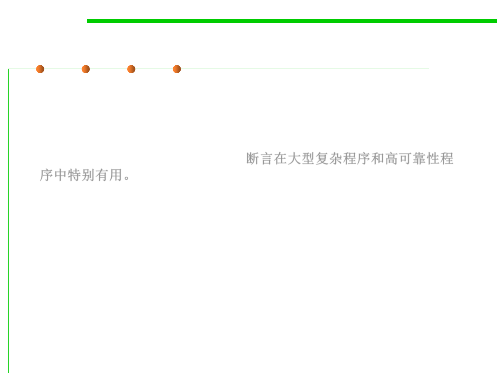

Assertion vs. Exception?
7.3 Assertions and Defensive Programming
▪ Assertions generally cover correctness issues of program.
▪ Exceptions generally cover robustness issues of program.
▪ Assertions are especially useful in large, complicated programs
and in high reliability programs.断言在大型复杂程序和高可靠性程
序中特别有用。
– They enable programmers to more quickly flush out mismatched interface
assumptions, errors that creep in when code is modified, and so on.
▪ Recall: checkRep() in Chapter 2 ADT for Rep Invariants.